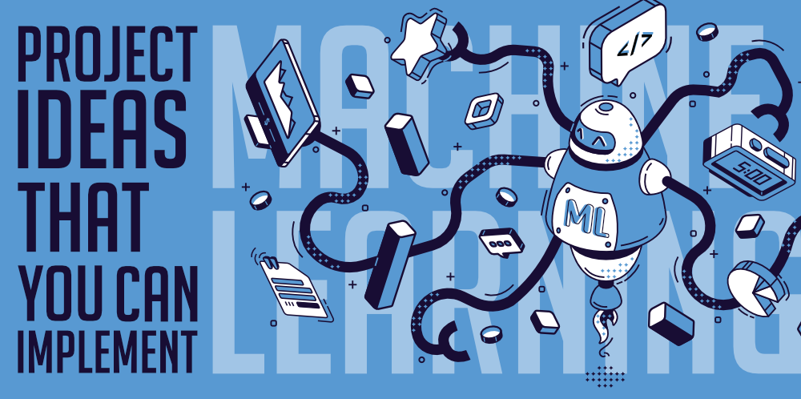

Machine Learning is one of the most popular emerging technologies in current times! And the best way to learn this technology is by doing projects. Other options like online courses, reading books, etc. only help in understanding the basics of ML, but it is only possible to truly learn the subject by doing projects with real-world data. This article has 10 Machine Learning Project Ideas that you can Implement and in doing so, learn more about Machine Learning than you ever did!
 Transform images into its cartoon. Yes, the objective of this machine learning project is to CARTOONIFY the images.
Thus, you will build a python application that will transform an image into its cartoon using machine learning libraries.
The iris flowers have different species and you can distinguish them based on the length of petals and sepals.
This is a basic project for machine learning beginners to predict the species of a new iris flower.
The objective of this machine learning project is to classify human facial expressions and map them to emojis.
You will build a convolution neural network to recognize facial emotions.
Then you will map those emotions with the corresponding emojis or avatars
The stock market is an everchanging field with many hight and lows as companies succeed or go under.
It is notoriously difficult to predict the stock market but that’s what this ML project is all about.
You will predict the future stock price returns based on the past stock market data like opening price, closing price, trading volume,
calculated returns, etc. as well as the news data like news articles published about company assets, etc.
This stock market dataset on Kaggle contains all this data that you can use for the project.
It’s not at all easy to get a loan from the bank. Getting a loan approved requires a complex mix of
factors not the least of which is a steady income! So this ML project aims to create a model that will classify how much loan the user
can obtain based on various factors such as the user’s marital status, income, education, employment prospects,
number of dependents, etc. The Loan prediction data set provides details about all these factors which can then be used to
create an ML model that demonstrates the amount of loan that can be approved.
There are a lot of factors that determine the price of a house including its location, size, number of rooms, etc.
But people ignore many of these factors while buying or selling a house. That’s where this project comes in!
It provides many factors for the house like it’s frontage, area, street, land contour, utilities, proximity, garage quality, roof materials, etc.
with the ultimate aim of predicting the final price of the house based on these factors. You can get the Housing Prices Prediction Project dataset for on Kaggle
and use it to create am ML algorithm that can accurately predict the house prices based on these factors.
What if shops could estimate the products that they sell every month! That’s what this project aims to accomplices.
You have to forecast the total amount of products that are sold in each shop while you are provided the daily sales data.
And the project is dynamic as well because the list of shops and products may change every month. You can get the sales data set to
create this ML project on Kaggle. The data set contains a training set and the test set for which you need to forecast the sales.
This project on Kaggle is also part of the final project of “How to win a data science competition” course on Coursera.
Not everyone can obtain a credit card with ease. The bank decides whether or not to issue a credit card based on multiple factors
that demonstrate how trustworthy the person is. And credit scores objectively quantify this trust factor and amount of risk.
So this project aims to create an ML model that can find out if an applicant is ‘good’ or ‘bad’ client for obtaining a credit card.
The dataset for this contains data such as annual income, income category, education level, way of living, etc. to decide whether the applicant is suitable for obtaining a credit card or not.
Movies are a big part of our world! But nobody knows how a movie will perform at the box office. There are some bix budget movies
that bomb and there are smaller movies that are smashing successes. This project tries to predict the overall worldwide box office revenue of movies using data
such as the movie cast, crew, posters, plot keywords, budget, production companies, release dates, languages, and countries.
The dataset on Kaggle contains all these data points that you can use to predict how a movie will fare at the box office.
The objective of this machine learning project is to detect and recognize the license number plate of a vehicle and read the license numbers printed on the plate.
This could be a good application for security scans, traffic monitoring, etc.